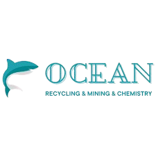
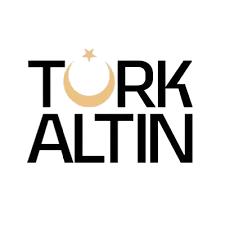
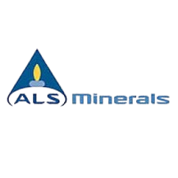

01
Geological consulting services
Strategic advisory across project lifecycle — from concept screening and concession due diligence to data-room reviews and independent technical opinion.
Field-tested geology, modern data science, and rigorous reporting — from outcrop to MRE, in one continuous workflow.
DGD Consulting is a young, ambitious project — built around a core of experienced geologists, engineers, and data scientists who have spent careers under the surface. We bring together decades of fieldwork with the energy of a team that believes the next generation of discoveries will be earned by combining classical exploration with modern computation.
Our approach is rooted locally and informed globally: we understand the regulatory, geological, and operational nuances of Central Asia, while leaning on international scientific expertise — JORC and CIM-aligned reporting, peer-reviewed methods, and the AI/ML toolchain reshaping resource estimation.
“Reduce uncertainty. Respect the land. Report with rigor.”
Each service is delivered to international reporting standards, paired with full chain-of-custody data and a final document that holds up under audit.
Strategic advisory across project lifecycle — from concept screening and concession due diligence to data-room reviews and independent technical opinion.
End-to-end exploration project files — geological models, drilling layouts, sampling protocols, budgets and timelines — packaged for permitting and investor review.
Field execution and supervision of trenching, mapping, and drilling programs — optimized for cost-per-discovery and accelerated decision points.
Mineral Resource Estimation reports prepared to JORC / CIM standards — block modeling, classification, sensitivity analysis and competent-person sign-off.
Specialist studies that complement standard exploration — sharpening targets and de-risking interpretations through multi-method evidence.
Independent oversight of sampling, lab performance and CRM/blank/duplicate insertion programs — keeping data audit-ready from day one.



Tell us about your project, your terrain, and the decision you're trying to de-risk. We'll respond within one business day.
Required fields are marked. We sign NDAs on request before any project disclosure.